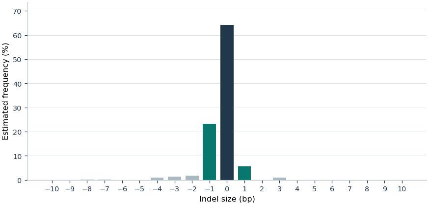

Publications and Projects / 2025
TIDE Trace Decomposition
Compare an unedited Sanger trace with a mixed trace to estimate how often the sequence length changed.

Reading a mixed trace
A mixed sample can produce overlapping peaks. The Python analyzer fits shifted copies of the control signal to the mixed trace and reports how much of the signal each length change explains. Several different sequences can share the same length change.
Explore the example
The results viewer opens the bundled example from the Python GUI. Switch between its four plots, inspect the frequency table, or export the spectrum. To analyze your own files, extract the local GUI download, install its requirements, and run the browser app.
Open example GUI · Download local GUIpython -m pip install -r requirements.txt
python AustinWong_TIDE_DASH.pyOpen http://127.0.0.1:8765/ while the app is running.